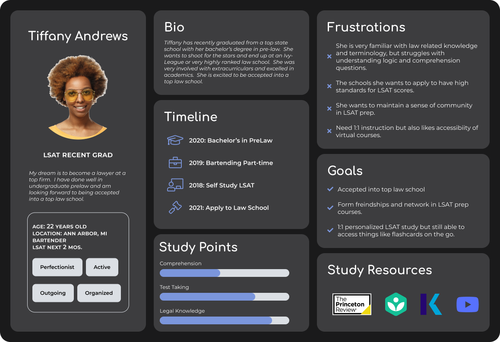
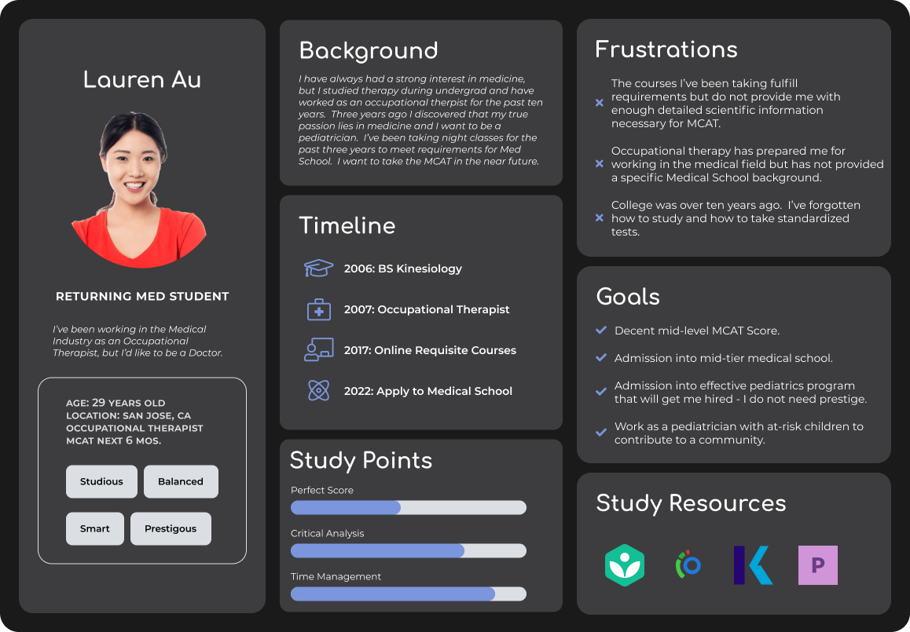

Design Issues
- Too Many Products
- Various Design Systems
- Content and Offerings
Final Prototype
Problem
Blueprint Test Prep is known for LSAT preparation but they also have MCAT offerings they'd like to highlight. Their design system and stack is all over the place. How can we provide users with a cohesive product experience?
Existing Learning Management System
Negative Online Reviews = A bad reputation
Research
I started the process by undertaking a competitive analysis - looking at other online test prep offerings.
Competitor 1: Kaplan Prep
Competitor 2: The LSAT Nerds
Competitor 3: Dr. Flowers
Kaplan offered more of a variety of programs, whereas LSAT was focused on law school, and Dr. Flowers on Med School. All showed clear paths and offerings for students.
Competitor Chart
User Feedback highlights Initial User Journey
After scourging the internet for user feedback, we also were able to conduct user interviews to identify student goals and frustrations. From this data we mapped user journeys to identify pain points in the process.
Core Issues with the Test Prep Experience
- Siloed Products
Stakeholders and users alike pointed towards the LMS functioning as nothing but a link repository, which relied on blocks of content to direct and teach students. - Navigation
Getting around the LMS was not cohesive. Navigating courses and programs was confusing and often mislead students. - Access is Difficult
Many of the elements within the LMS are static. Students are expecting an interactive experience. - Information Overload
LMS has major accessibility issues. It is also lacking proper CC and transcripts. - Accessibility
Audit of information architecture is needed to reinstate hierarchies and normalize flows across the student experience.
Personas
User Personas
 Initial Designs
Initial ideations and iterations regarding LMS Design.
Initial Mid-Fidelity Designs
My initial design included a revamp of the top navigation bar, and making notifications easy to access.
Usability Testing
We tested our designs on students and internal users alike in order to make some changes. With our final MVP, we also sourced users through usabilityhub.com to test usability and reception of general prospective users based on demographic information.
New Requirements and Iterations
While testing, we came across other features and design issues that needed updating.
The addition of the high fives feature necessitated an overhauld of the notification process. An updated navigation bar played into the pressing need for a dashboard redesign. Our search updates led to a need for an easier way to enter scores.
Responsivity
Most users access their LSAT and MCAT material from a mobile device. We were careful to ensure our designs were mobile applicable.
Final MVP
All the small design changes and features updates we undertook necessitated a larger overhaul of the user experience and design library in order to keep things cohesive and intuitive.
Putting it all together